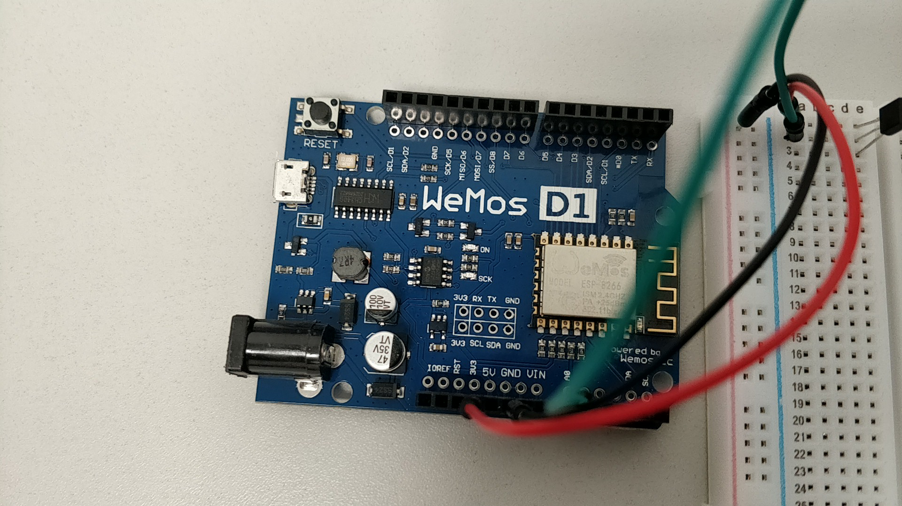

In this unit, you will investigate the characteristics, including benefits and features, of existing automated systems. Using a suitable self-assembly kit, you will design and develop an automated system for a brief. You will develop the system by making progress in small steps and building up programs that can control hardware devices by monitoring sensors and controlling outputs. To do this, you will learn some control programming, hardware assembly and trouble shooting skills.